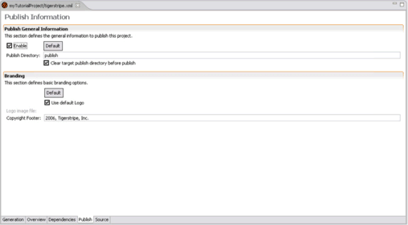

© copyright 2005, 2006, 2007 Cisco Systems, Inc. - All rights reserved
This section details the parameters available for configuration and customization of the published websites when publishing Tigerstripe projects.
The Publish options are available from the Publish tab on the Tigerstripe descriptor.
To publish your Tigerstripe Projec:
- Ensure that the Tigerstripe Perspective is the active perspective.
- In the Tigerstripe Explorer, navigate to the Tigerstriper Descriptor of the project you want to export.
- Double-click the Project Descriptor. An editor opens.
- Select the Publish tab. The following options display.

To enable the Publish operation:
- Select the Enable option.
- Ensure that the Publish directory contains a valid directory name. This is the directory within the project where your website will be generated.
- Click Default to set the directory as the default Publish directory.
Complete the following procedure to select the target directory to where the content of your website will be generated
To select the target Publish directory:
- Enter a valid directory name in the Publish Directory text box. This is the name of the directory to where your HTML files will be generated. It is a directory path relative to the root of the project. If the directory does not exist, it will automatically be created.
- Select Clear target publish directory before publish to clear the content of the directory before performing the Publish operation.
By default, the published website is "Tigerstripe-branded" with the Tigerstripe logo and Copyright notice. You can provide an alternative logo and Copyright notice for your website. Complete the following procedure to provide an alternative logo and Copyright notice.
Note: To return to the default Tigerstripe branding, click Default.

© copyright 2005, 2006, 2007 Cisco Systems, Inc. - All rights reserved